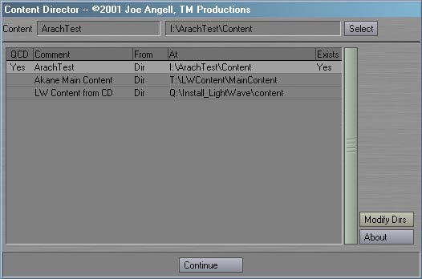
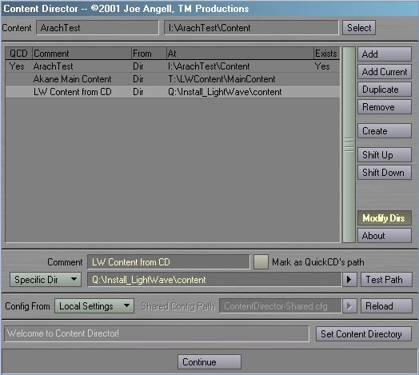
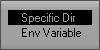
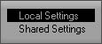
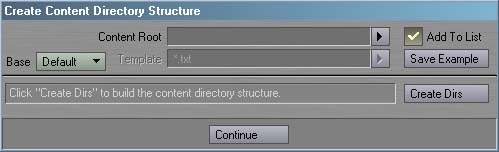
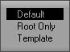

|
To install Content Director, just follow these steps:
Content Director has two main modes. The first mode is for quickly selecting which content directory you want. You should see an interface similar to the one below after activating Content Director. Simply select the content directory from the list and hit Continue, and the content directory will be changed.  The Current Content fields present the current content directory set in Layout. If the content directory matches one of the entries in the list, it's name will be displayed in the field to the left. The Select button will select the current content dir if it exists in the list. The list shows all the available content directories. The QCD column shows which of the fields is marked for QuickCD, providing one-click access to changing that content directory through the QuickCD generic plug-in. The comment column displays the comment for this directory. This is just some meaningful name for you to remember which path is used for what purpose. The from column shows if this content directory's path is from an environment variable or a specific directory. The next column is the path for this content directory. The Exists column displays a check if the path exists, and is empty if it doesn't. The About button, as you'd expect, will present some information about this plug-in. Modify Dirs switches Content Director into it's second mode. When active, a series of new buttons and edit controls will appear, allowing you to modify the contents of the list. The expanded interface should look like the image below.  New content directories can be added to the list with the Add button. The new entry will be selected so you can start editing it immediatly. You can add the current content directory as a new entry with the Add Current button. Duplicate will make a copy of the selected entry, providing a base for creating new content directories. Remove will remove an entry from the list and select the previous entry. Shift Up and Shift Down allow you to change the ordering of items in the list, shifting the selected item one step up or down the list, respectivly. The edit fields under the list provide options for changing entries in the list. The Comment field lets you give each content directory a meaningful name so you can easilly identify the projects associated with this directory.  The popup and edit fields underneath are for picking the content directory itself. If set to Specific Dir, the field will represent the path to the content directory; clicking the button to it's right will open a directory requester for selecting a path.; If set to Env Var, this is the name of an environment variable. The popup to the right of the field will list all environment variables on your system. You can use the Test Path button to make sure the directory exists. The Mark as QuickCD's path check will mark this path for use by QuickCD. One use for this feature is to make QuickCD your StartupCommand and use an environment variable for the content directory's path. Each time you start Layout, the content directory will automatically be set to match the environment variable. Normally, Content Director stores it's configuration file in the same directory as Lightwave's config. To make content directory management easier at large facilities, it can instead use a shared config. In shared mode, the local config contains only the name of the shared config, and all the entries are loaded from the shared file. The configuration file is automatically saved when the panel is closed. To keep users from saving over a shared config, you can make the shared config file Read-Only. If the file cannot be opened (ie: because it is Read-Only), Content Director will not save it's configs.  The Config From pop-up lets you choose where the configuration file is saved. The default Local mode stores all the data in a file named ContentDirector.cfg in the same directory as the Lightwave config. Setting the Config From pop-up to Shared mode activates the Shared Config Path field. This lets you pick where the shared config exists. In larger facilities, this would normally be a network drive that all users can access. Settings will be loaded from and saved to this path, with the local config storing only the shared config's name. Reload will restore the original config file from disk, canceling any changes made to the content directories. Which config is loaded is determined by the current state of the Config Form pop-up. At the very bottom of the interface is the Status Field, which provides updates on the current state of Content Directory. The Set Content Directory button will change the current content directory to the one selected in the list immediately, but without closing the panel. Note that hitting Continue will also change the content directory to the currently selected entry. Note that if you have the Options Panel in Layout open and then use Content Director to change the content directory, the Options Panel will still display the old content directory. The path really has changed, though; the Options Panel just hasn't updated it's display. Closing and re-opeing the Options Panel will show the corret path. Creating New Content Directory Structures
The Create button is the gateway to creating completely new content directory structures from scratch. This allows you not only create the content directory itself, but also any combination of directories and sub-directories within. After clicking Create, you should see an interface like the one below.  Create Root specifies the path to the new content directory. If it doesn't exist, it will automatically be created with the rest of the directories. When enabled, Add To List will add the newly-created content directory to the main content directory list. The comment will be the same as the content directory's name, and it will automatically be selected in the list.  The Base pop-up lets you decide what sub-directories should be created in the content directory. Root Only will create only the Root Dir, if it doesn't already exist. Default will create the standard set of directories within the root: Scenes, Objects, Images, Motions, Envelopes, Surfaces and Previews.The Template Base mode allows you to specify an exact directory configuration via a text file. This file contains a simple header as it's first line ("ContentDirectorTemplate 1") followed by any number of directories to create with any number of sub-directories. Each directory to create must be on a seperate line, although compound directories are allowed (such as "Scenes/Tests") Any leading or trailing white space (tabs or spaces) on the line will be removed before the directory is created. A template should not contain any absolute paths, meaning there should be no paths containing drive specifications like "C:\". Any line starting with a semi-colon will be considered a comment and will be skipped. The Template field to the right of the Base pop-up allows you to select the template file you want to use. For an example of how to create a template, click the Create Example button. This will generate a file like the following:
After the options are set the way you like, click Create Dirs to build the content directory structure. The status field to the left will fill as directories are created, and will turn red when reporting an error. Click continue to close return to the main interface. Revision History
Bugs? Feature requests? Can't get it to work? Feel free to contact us if you're having any problems or want to request a feature.
All programs presented here are Copyright ©2000-2002 TM Productions, All Rights Reserved. Please contact us if you would like to distribute any of these programs, or if you find any particularly useful. |